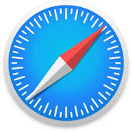

Neden Bu Sayfada Olduğunu Merak Ediyorsundur.
Sebebi Tarayıcının Eski Olması.
Bu Sayfada ki Özel IPTV Kanalının Bazı Videoları MKV Şeklinde Oynatılıyor.
Site Statik Site Olduğu İçin Videoları Sunucudan Çekemiyoruz.
Yani Lütfen Güncel Bir Tarayıcı İndir.
